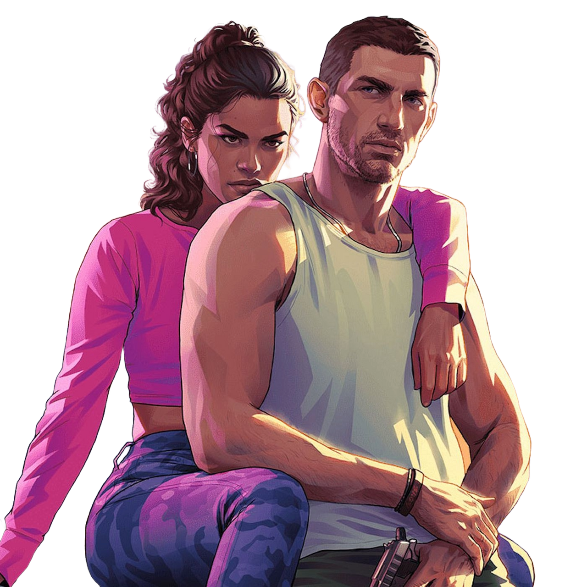

Bem-vindo ao Vice City Files, o seu ponto de encontro definitivo para desvendar tudo o que está escondido em Leonida!

Bastidores e Recordes
• O maior lançamento da história: O jogo vendeu 32,5 milhões de cópias apenas na pré-venda e arrecadou US$ 3,79 bilhões nas primeiras 24 horas.
• Mais de uma década de trabalho: Cerca de 5 mil profissionais ao redor do mundo trabalharam no desenvolvimento. A equipe da Rockstar começou a viajar para Miami ainda em 2015 para fotografar bairros, estabelecimentos e estudar a cultura local da Flórida.
• Primeira protagonista feminina na era 3D/HD: Lucia Caminos divide a história com Jason Duval em uma dinâmica inspirada no casal criminoso Bonnie e Clyde.
Mistérios, Cultura Pop e Bizarrices
• Ritual demoníaco: Em Capri, perto de Tortoise Lake, existe um prédio com um pentagrama no chão. Colocar um NPC inconsciente ali inicia um ritual que escurece o céu e invoca uma criatura demoníaca vulnerável apenas a fogo.
• O Pé-Grande da Flórida (Skunk Ape): Nos pântanos de Gullet Marsh (região de Grassrivers), jogadores podem investigar panfletos e encontrar a versão local do Pé-Grande.
• Apartamento de Dexter e casa do Bob Esponja: Em Washington Island, a Rockstar recriou a fachada do condomínio onde morava o personagem Dexter Morgan. Já na Cicada Avenue, um ponto de ônibus tem o formato exato do abacaxi do Bob Esponja.
• Cachorro salva-vidas de jet ski: Se você ficar perdido em alto-mar por muito tempo em Gambit Bay, um cachorro usando equipamentos de proteção pode aparecer pilotando uma moto aquática para levar você de volta à costa.
Easter Eggs e Referências a Outros Jogos
• O barco de Michael e o final oficial de GTA 5: No quintal de Jason, há um barco igual ao de Michael De Santa com um GPS indicando coordenadas de Los Santos. Além disso, um programa de rádio no jogo confirma que Michael, Franklin e Trevor estão vivos, oficializando o "Final C" de GTA 5 como canônico.
• Homenagem a Red Dead Redemption 2: É possível encontrar o chapéu de Arthur Morgan espalhado por Leonida, além de notas de dólar do jogo estampadas com os rostos dos presidentes fictícios de RDR2.
• Um "Easter Egg" literal: Se você escalar a torre de rádio mais alta de Vice City (uma subida de quase 7 minutos), encontrará um ninho com um ovo de Páscoa decorado. Arremessá-lo com força ativa uma cena secreta.